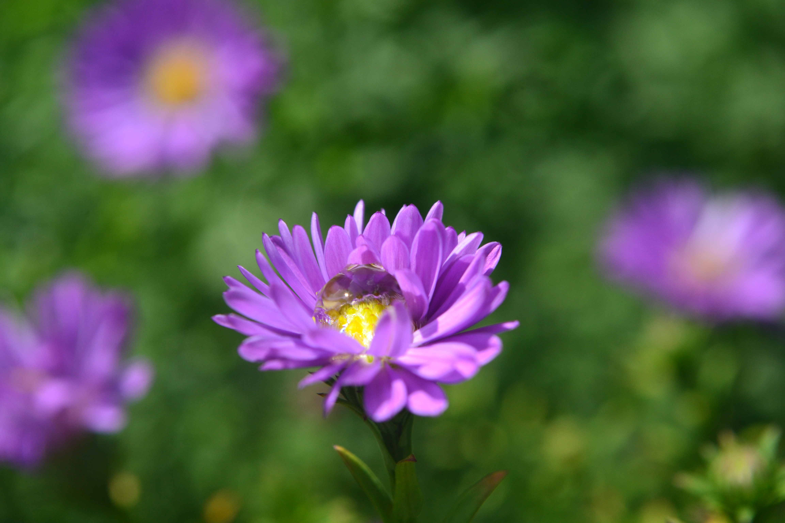
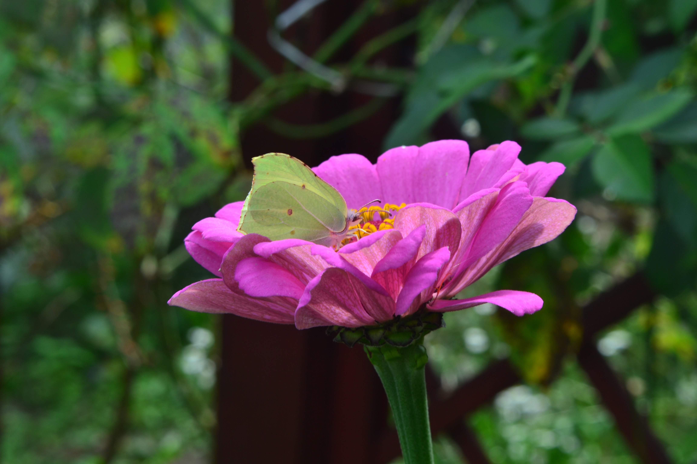
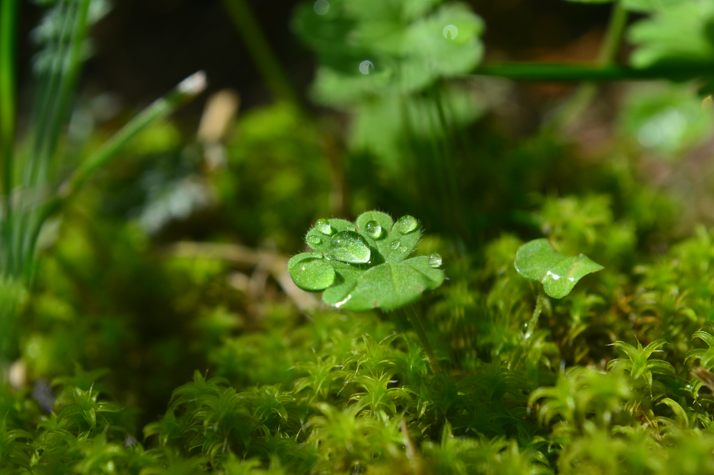
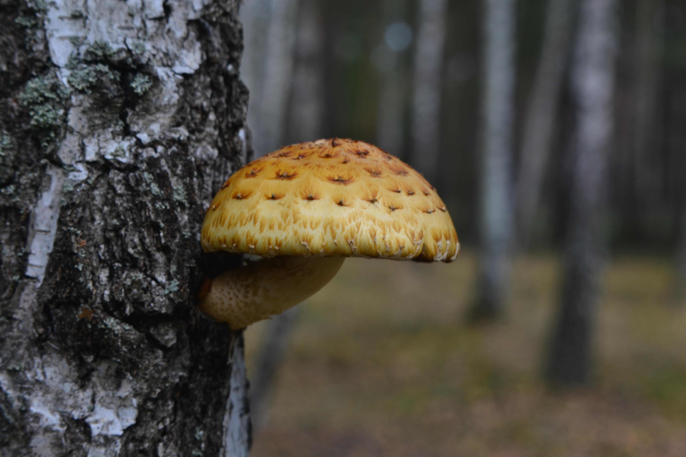
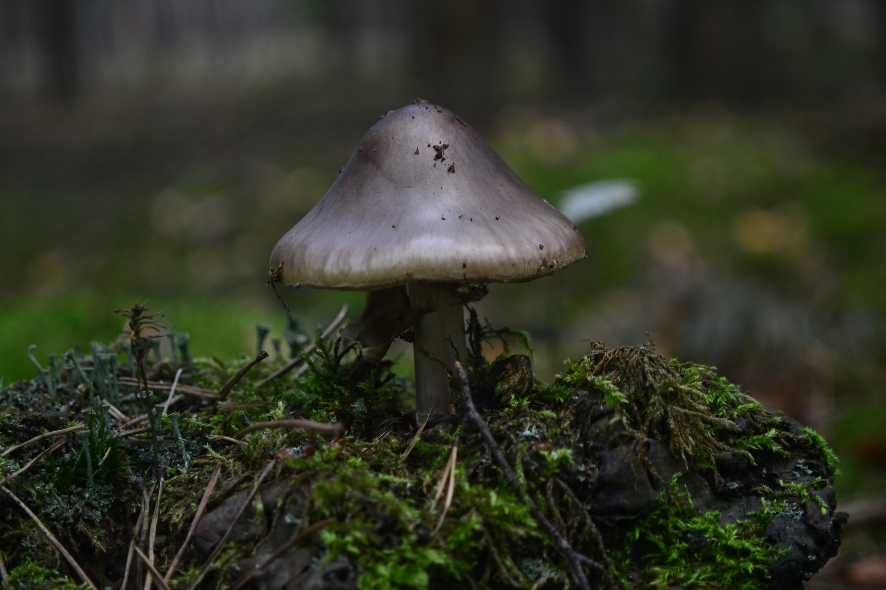
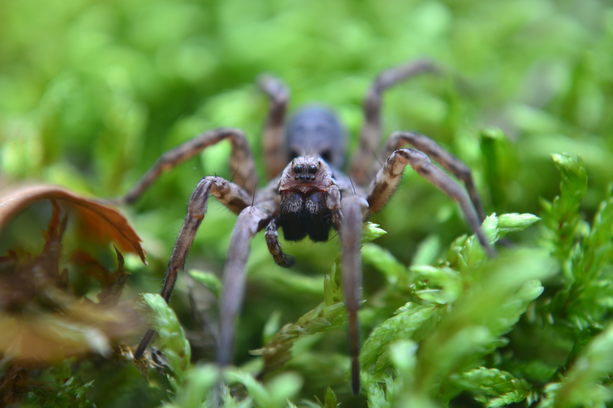
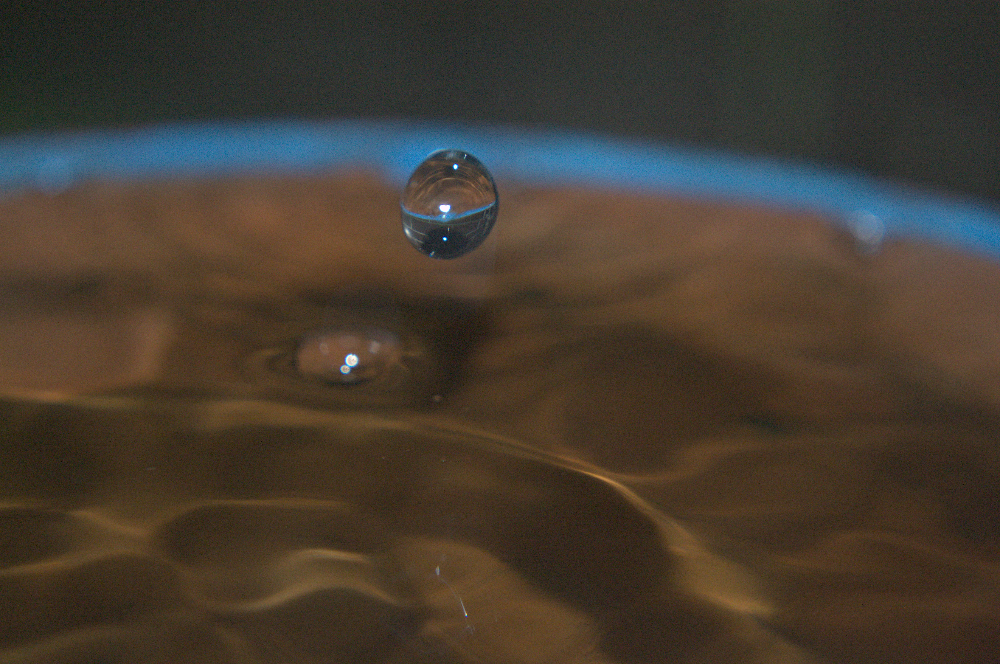

In my free time I love spending time as close to nature as possible and to capture that moments
often take my camera with me and take photos of everything that surrounds me. Most of theese
were taken during laying long hours in grass or some bushes.






